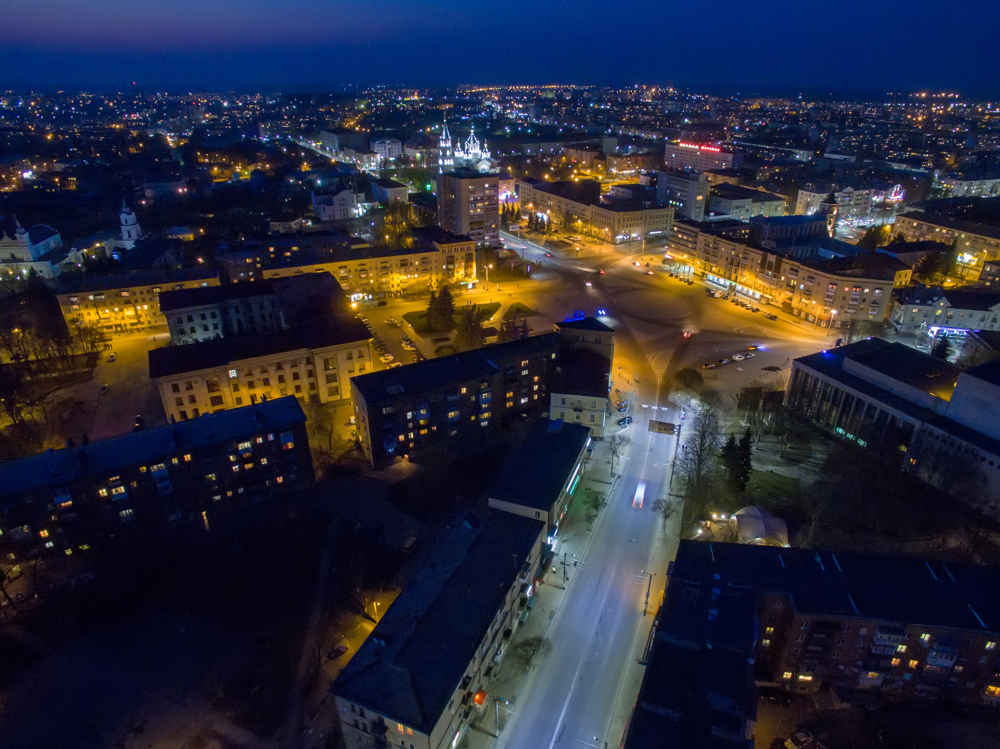
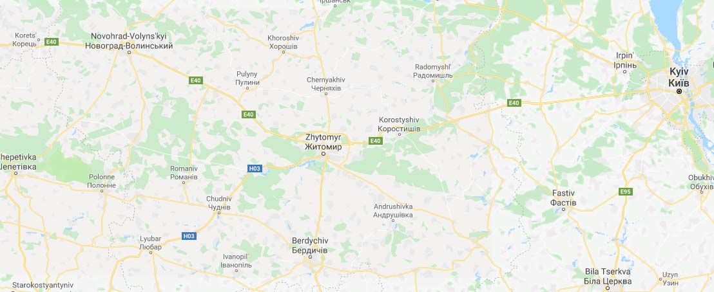

Житомир - невелике українське місто,
що заслуговує більшого

Житомир
5 причин чтому Житомир краще!
-
Справжнє місто
-№1-
Житомир - не атракціон для туристів, там тече своє життя
-

Житло
Рекомендуємо пожити у справжньому готелі, все як в кіно
-

Їжа
Завжди замовляйте фірмовий борщ! Ви не розчаруєтесь
-

Сувеніри
Не тільки китайського але й місцевого виробництва
-
Там є "Голова Чадського"
-№2-
Так з неї можна цибнути в річку, якщо наважитесь
-
Невелика площа
-№3-
Всі видатні місця знаходяться поряд
-
Гарна дорога
-№4-
Їхати в Житомир з Бердичева зовсім не нудно
-
Мало туристів
-№5-
Більшість їде в бердичів і сидить там
Зацікавились?
Вкажіть дату приїзду і ми допоможемо Вам підібрати готель
